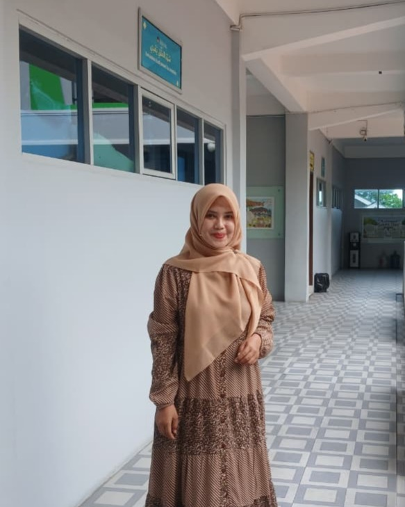

Homeroom Teacher
Beginning my career as an junior staff member at a government office in 2014, I simultaneously pursued my Master’s degree. After graduating in 2016, I chose to become an educator to align with my academic background. Over the years, I have been entrusted with teaching subject courses, serving as a homeroom teacher, and holding the position of Vice Principal for Student Affairs for five years. Currently, I am honored to serve as the homeroom teacher for Class XI KUI IPS Ismahanee Alwafi and the Religious Studies Class Hayat Al-Sindi. Teaching is a truly rewarding profession, as it provides the opportunity to impart knowledge, shape character, and inspire the next generation of our nation.
"Make kindness a habit and making things easier for others is the way to ease things for yourself"